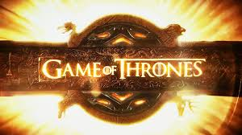

Game of Thrones is an American fantasy drama television series created by David Benioff and D. B. Weiss. It is an adaptation of A Song of Ice and Fire, George R. R. Martin's series of fantasy novels, the first of which is A Game of Thrones. It is filmed in Belfast and elsewhere in the United Kingdom, Canada, Croatia, Iceland, Malta, Morocco, Spain, and the United States. The series premiered on HBO in the United States on April 17, 2011, and its seventh season ended on August 27, 2017. The series will conclude with its eighth season premiering in 2019.
Set on the fictional continents of Westeros and Essos, Game of Thrones has several plot lines and a large ensemble cast but centers on three primary story arcs. The first story arc centers on the Iron Throne of the Seven Kingdoms and follows a web of alliances and conflicts among the dynastic noble families either vying to claim the throne or fighting for independence from the throne. The second story arc focuses on the last descendant of the realm's deposed ruling dynasty, exiled and plotting a return to the throne. The third story arc centers on the longstanding brotherhood charged with defending the realm against the ancient threats of the
fierce peoples and legendary creatures that lie far north, and an impending winter that threatens the realm.
| Genre: | Fantasy |
| Created By: | David Benioff & D. B. Weiss |
| Based on: | A Song of Ice and Fire |
| Opening Theme: | |
| No. of Seasons: | 8 |
| No. of Episodes: | 73 |
Critical Response
Game of Thrones has received critical acclaim, although the series' frequent use of nudity and violence has been criticized. Its seasons have appeared on annual "best of" lists published by The Washington Post (2011), TIME (2011 and 2012) and The Hollywood Reporter (2012).
| Season | Ratings | Highest Rated Episode | Lowest Rated Episode |
|---|---|---|---|
| 1 | 89% (34 reviews) | "Fire and Blood" | "Lord Snow" |
| 2 | 96% (34 reviews) | "The Old Gods and the New" | "The Night Lands" |
| 3 | 97% (43 reviews) | "Mhysa" | "The Bear and the Maiden Fair" |
| 4 | 97% (43 reviews) | "Mockingbird" | "The Watchers on the Wall" |
| 5 | 95% (52 reviews) | "Hardhome" | "Unbowed, Unbent, Unbroken" |
| 6 | 95% (30 reviews) | "Battle of the Bastards" | "No One" |
| 7 | 95% (43 reviews) | "The Spoils of War" | "Beyond the Wall" |
Awards
The series has received 110 Primetime Emmy Award nominations, including six consecutive Outstanding Drama Series nominations, with 38 wins to date. Game of Thrones received many nominations, with awards recognizing various aspects of the series such as directing, writing, cast, visual effects, or overall quality.
Peter Dinklage is the most rewarded member of the cast, with recognitions such as the Primetime Emmy Award and Golden Globe for Best Supporting Actor in a Series.
In addition, cast members Lena Headey, Emilia Clarke, Kit Harington, Maisie Williams, Diana Rigg, and Max von Sydow received Primetime Emmy Award nominations for their performances in the series. The rest of the cast was also very praised, many receiving various awards nominations, including six Screen Actors Guild Award for Outstanding Performance by an Ensemble in a Drama Series nominations rewarding all of the main cast for seasons 1, 3, 4, 5, 6, and 7. In 2015, it set a record for winning the most number of Primetime Emmy Awards for a series in a single year, with 12 wins out of 24 nominations. In 2016, it became the most awarded series in Emmy Awards history, with a total of 38 wins, To date, Game of Thrones has won 244 awards out of 686 nominations.
Emmy Awards
| Year | No. of Nominations | No. of Wins | Most nominated Episode | Most won Episode |
|---|---|---|---|---|
| 2011 | 13 | 2 | "A Goden Crown" | - |
| 2012 | 12 | 6 | "Blackwater" | "Blackwater" |
| 2013 | 17 | 2 | "Valar Dohaeris" | "Valar Dohaeris" |
| 2014 | 20 | 4 | "The Children" | "The Children" |
| 2015 | 24 | 12 | "Hardhome" | "Mother's Mercy" |
| 2016 | 23 | 12 | "Battle of the Bastards" | "Battle of the Bastards" |